精選作品檔案庫
// 預設展示 9 項跨領域精選作品。點選右上角各分類查看對應領域完整專案。
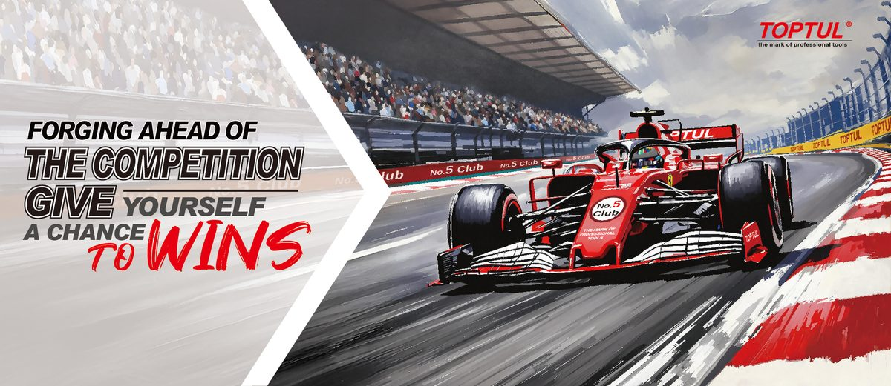
[ 空間視覺 ] 5號會館迎賓室大幅牆面海報設計理念：專為5號會館迎賓接待空間量身打造之大尺寸牆面輸出。畫面以極具速度張力的紅黑 F1 賽車馳騁賽道為主體，融合手繪油彩質感筆觸與動態速度線，搭配「Forging Ahead of the Competition」競速標語，向蒞臨貴賓傳達品牌專注極致工藝、勇於超越競品的熱血野心與專業動能。
工具：Photoshop (超大尺寸高解析完稿 / 筆觸光影合成)、Illustrator (空間文字編排)">
5號會館迎賓室大幅海報
迎賓接待空間巨幅視覺牆面，F1 賽車馳騁筆觸融合標語，傳達超越競品的工藝動能。
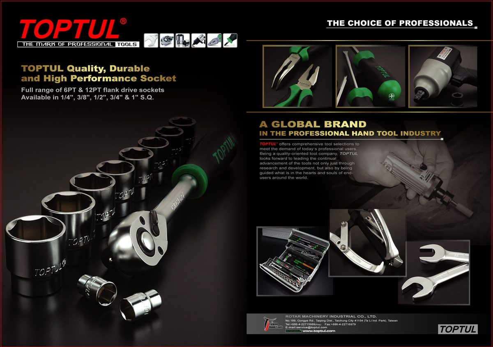
[ 平面廣告 ] 2012 台灣手工具工會專刊雜誌廣告設計理念：經典品牌識別時期的專業雜誌形象稿。以品牌代表性深綠色與消光黑為視覺底色，主打核心專利快脫棘輪扳手與微距倒角鉻釩套筒組。排版講求堅實的結構秩序感，透過強烈側逆光勾勒工具邊緣金屬冷光，向產業同儕與進出口貿易商傳遞扎實的台灣製造品質。
工具：Photoshop (高反差金屬調色與微距去背修光)、Illustrator (雜誌全頁出血與印刷完稿)">
2012手工具工會雜誌稿
早期經典綠黑主視覺，高反差棚拍光影呈現頂級棘輪扳手與多規格套筒工具組的淬鍊質感。
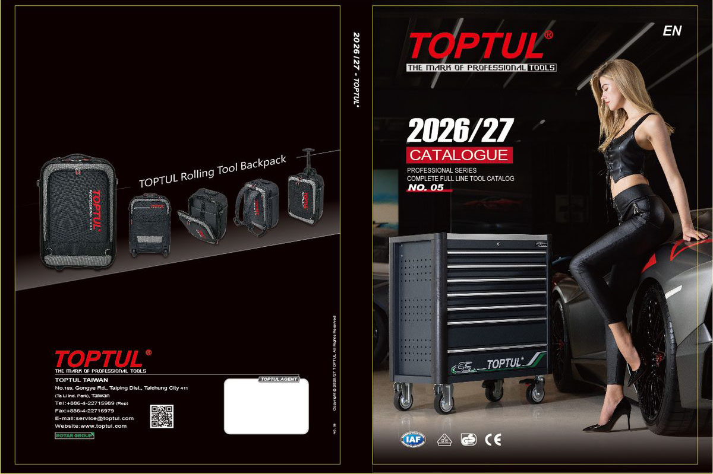
[ 目錄設計 ] 2026 品牌目錄封面（時尚女版）設計理念：為跳脫傳統五金產業陽剛單一的刻板視覺，本版封面大膽引入專業女性技師與頂級灰色跑車、多功能工具推車之跨界對話。以極致光影對比刻畫車身流線曲面與鋼製工具的冰冷光澤，展現品牌進軍高端汽車維修與賽車工程後勤的多元國際視野。
工具：InDesign (裝訂落版與色彩管理)、Photoshop (超跑與棚拍人物無縫合成)、Illustrator (向量標誌與標準字)">
2026 品牌目錄封面 - 時尚女版
融合現代女性工程師形象與灰色超跑跑格，突破傳統黑手工業厚重氛圍，傳遞俐落俐落的精密感。
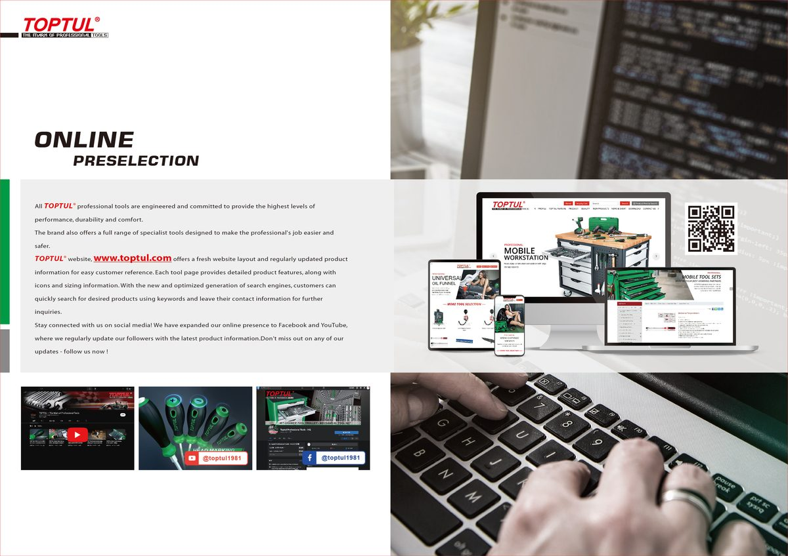
[ 型錄跨頁 ] 2026 產品介紹頁 (03) - 官方數位選品與規格資料庫系統設計理念：將實體紙本型錄與企業數位工具深度整合的引流跨頁。展示手機、平板、桌機三合一響應式介面，介紹技師如何透過官網輸入零件公英制尺寸或原廠料號，在數秒內精確檢索出對應手工具規格書與零組件料號，體現紙電整合的現代化服務體驗。
工具：InDesign (資訊圖表階層整合)、Photoshop (跨裝置 UI 螢幕擬真打光渲染)">
2026 產品介紹頁 (03)
跨頁介紹全新改版官方網站與智慧型即時搜尋系統，展現跨手機、平板、筆電的數位查規體驗。
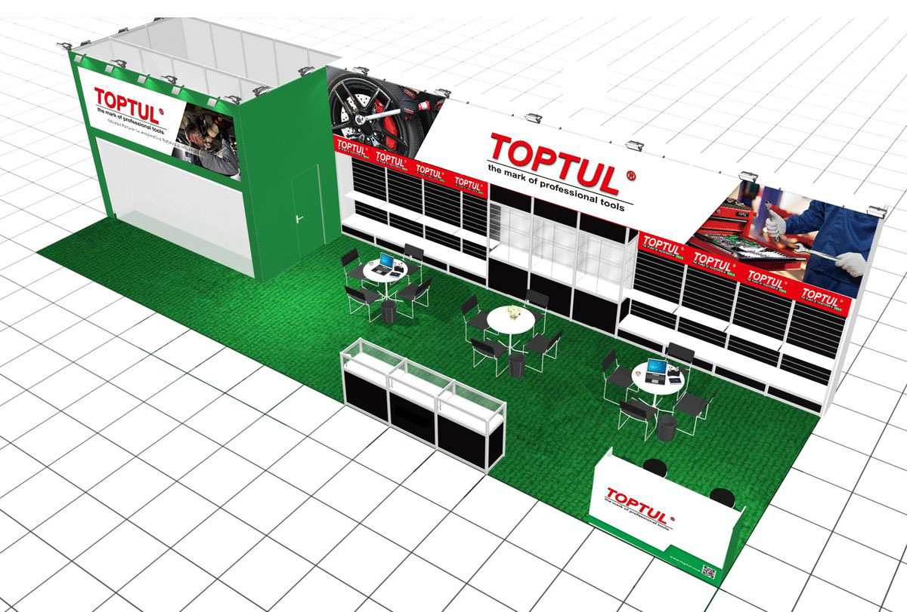
[ 空間展覽 ] 2024 德國法蘭克福展特裝攤位全景透視合成 (3)設計理念：雙開口角位（Corner Booth）全景透視空間規劃。整合正面開放式展示台、側方主力品項掛牆區與後方半隱密商務洽談區；地面採用防滑高承重工業地磚，並預留地底走線槽以支援現場高壓檢測機台動態示範，全方位展現國際一線工具品牌的展場規格。
工具：Photoshop (多視角空間透視校正與泛光氛圍微調)、AutoCAD / Illustrator (平面動線平面圖對照)">
法蘭克福展攤位合成
全景開放式雙面開口架構，兼顧動線引流、獨立 VIP 簽約洽談室與倉儲備品動線規劃。
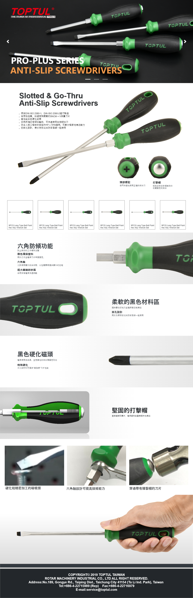
[ 產品網頁 ] 第三代膠把螺絲起子產品介紹頁設計理念：以工程解析視角引導技師深入了解第三代雙料人體工學握柄的物理抗滑優勢。頁面區塊清楚拆解高抗扭 CR-V 合金鋼軸心、黑化防滑磁性刀頭與防滾動邊緣設計，搭配條理化規格對照表（長度、刃厚、PH/PZ/SL型號），大幅降低工業客戶採購核對時間。
工具：Photoshop (產品去背與光影修飾)、Illustrator (結構爆炸圖向量繪製)、CSS3 彈性版面">
第三代膠把螺絲起子網頁
以圖文對照解構人體工學三料手柄、高強度軸心結構與全系列規格清單，強化工程選品效率。
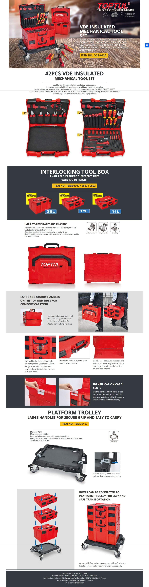
[ 產品網頁 ] 專業級 VDE 1000V 絕緣工具箱介紹頁設計理念：專為新能源車與電力工程維修市場規劃之專業推廣頁。重點展示全套 42 件經德國 VDE 嚴格認證的 1000V 絕緣手工具組合，詳盡列出工程級抗衝擊 ABS 手提箱、高密度客製化雙色防呆泡棉、雙重安全防護扣鎖等耐用細節，傳遞最高標準的施工防護信賴感。
工具：Photoshop (情境合成與箱體修光)、Illustrator (VDE 檢驗標章與規格符號編排)">
絕緣工具箱新品介紹頁
聚焦 VDE 1000V 國際高壓安全認證與 42 件組模組收納，結合耐衝擊箱體規格提供完整解決方案。
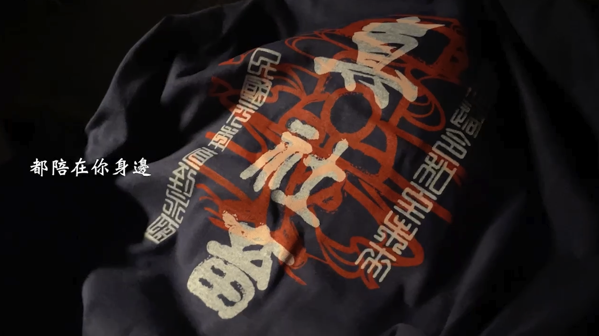
[ 動態影像 ] 文創生活服飾社群形象短片 (Video 01)設計理念：文創生活服飾社群推廣短影音。全程採用自然光與大光圈定焦鏡頭實景側拍，以日系清新低飽和的膠卷感進行調色。鏡頭細緻捕捉天然棉麻布料的手感纖維肌理、服飾隨微風擺動的自然垂墜度與生活日常穿搭，搭配輕快舒緩的配樂節奏，創造兼具文青質感與高點擊率的社群氛圍。
工具：Premiere Pro (剪輯節奏律動、轉場與雙聲道混音)、DaVinci Resolve (日系清新風格色彩調校)">
文創服飾社群宣傳短片 (Video 01)
自然光實景側拍與日系清透色調調色，呈現純棉織品細緻肌理與慢活穿搭質感。
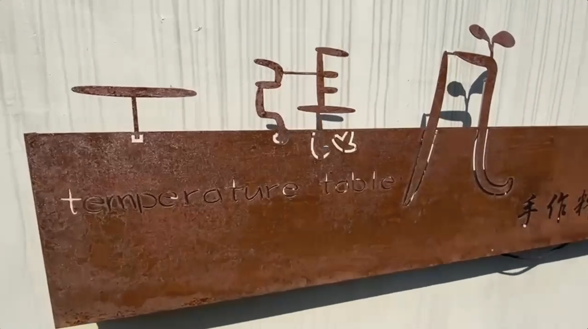
[ 動態影像 ] 老宅手作早午餐探店形象短影音 (Video 02)設計理念：為紅磚老宅改造早午餐咖啡館拍攝之沉浸式短影音。運鏡穿梭於復古斑駁的磚牆與綠意植栽間，特寫單品手沖咖啡的細膩萃取過程與現烤出爐烘焙料理的誘人色澤，運用慢動作攝影與現場環境收音（咖啡水流聲、餐具輕碰聲），營造極具食慾與造訪渴望的人文溫度。
工具：Premiere Pro (節奏剪輯與音效強化)、DaVinci Resolve (暖色調復古色調與高光柔化)">
老宅手作早午餐探店形象短片 (Video 02)
老宅紅磚復古空間運鏡、咖啡手沖與現做餐點特寫，營造溫暖人文氛圍與打卡張力。
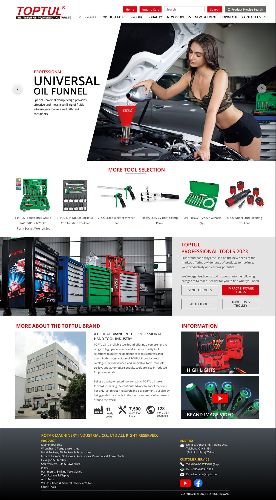
[ 網頁設計 ] 企業官方網站首頁改版提案設計理念：針對外銷 B2B 買主使用習慣重塑品牌入口門面。版面頂端規劃清晰的多國語系切換與全站即時料號搜尋，主視覺 Banner 強化工具精準質感與國際代理佈局。中段導入直覺式產品分類導航卡片（氣動、絕緣、套筒、工具車），縮短海外買家從進站到取得規格 PDF 的點擊路徑。
工具：Figma (UI/UX 響應式原型)、Photoshop (主視覺影像調色與合成)、HTML5 / CSS3 / Tailwind CSS">
企業官方網站首頁
重構外銷品牌官方入口網首頁，建立多語系切換、核心產品分類導航與跨裝置瀏覽架構。
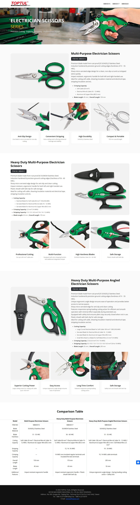
[ 網頁型錄 ] 專業電工剪系列線上規格介紹頁設計理念：針對歐美電力技師與水電工程市場規劃之英文版產品頁。透過高清晰度微距特寫突顯高碳鉬釩不鏽鋼刃面、精密防滑微齒與整合式壓接剝線槽等工藝細節。頁面條列三款主推型號之適用剪切線徑（銅線、鋁線、軟電纜）對照表，提供清晰無障礙的專業採購指引。
工具：Photoshop (微距金屬質感修圖)、Illustrator (刀刃幾何角度圖示繪製)">
專業電工剪新品介紹頁
英文版線上型錄規格頁，微距細節呈現刀刃防滑齒槽與剝線切槽，協助海外技師精準比對料號。
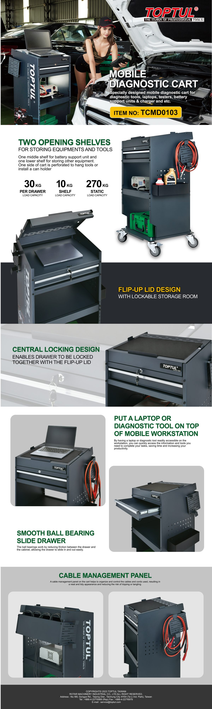
[ 產品網頁 ] 汽修專業行動診斷工具車新品介紹頁設計理念：以實車檢測情境與高精度外觀渲染圖為核心，解決汽修廠技師診斷電腦與高階檢測儀器無專用移動平台之痛點。頁面展示傾斜式筆電操作台、多功能外掛走線收納孔、5 吋高負重靜音煞車輪與中央安全防盜鎖定系統，建構兼具專業科技感與高耐用度的行動工作站形象。
工具：Photoshop (廠景多圖光影合成)、Illustrator (機構尺寸標註與機能導覽線圖)">
行動診斷車新品介紹頁
整合筆電作業平台、大承重抽屜、管線收納與中控鎖機制，專為汽修檢測打造之移動工作站專頁。
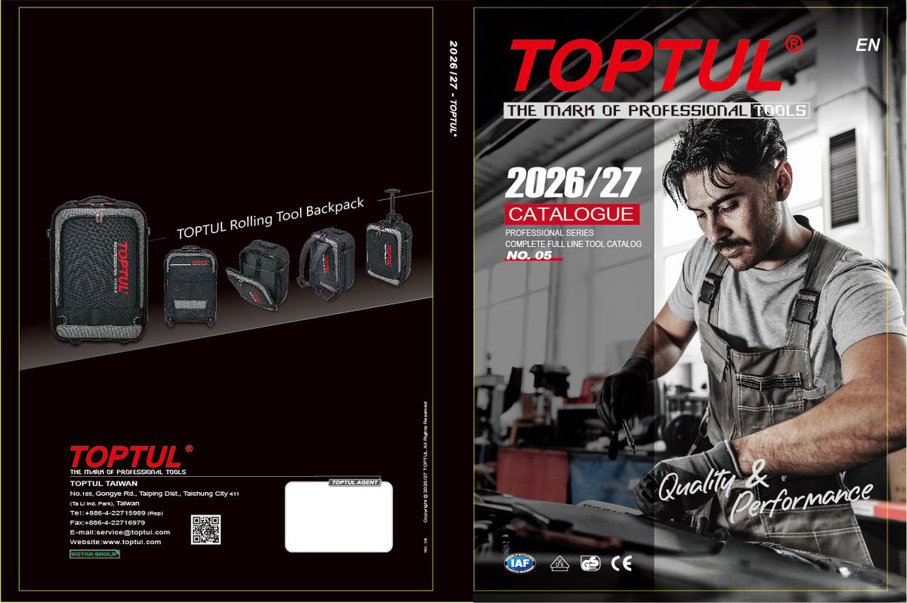
[ 目錄設計 ] 2026/27 品牌綜合工具目錄封面（專業男版）設計理念：雙年刊重量級綜合型錄封面設計。以聚光燈下的資深維修工程師緊握精準扭力扳手為主視覺，背景巧妙融入工具車抽屜的層疊秩序感。封面標題「Quality & Performance」採特黑金屬質感調校，封底條理規劃國際認證標章、全球授權總部聯絡資訊與滾輪式重型工具拉桿包新品導購。
工具：InDesign (全書落版與跨頁版面整合)、Photoshop (人物光影精修與金屬質感強化)、Illustrator (燙金線條與向量文字)">
2026 品牌目錄封面 - 專業男版
深邃沉穩基調結合專注作業的資深技師主視覺，展現品牌 40 年深耕專業工具領域的厚實底蘊。
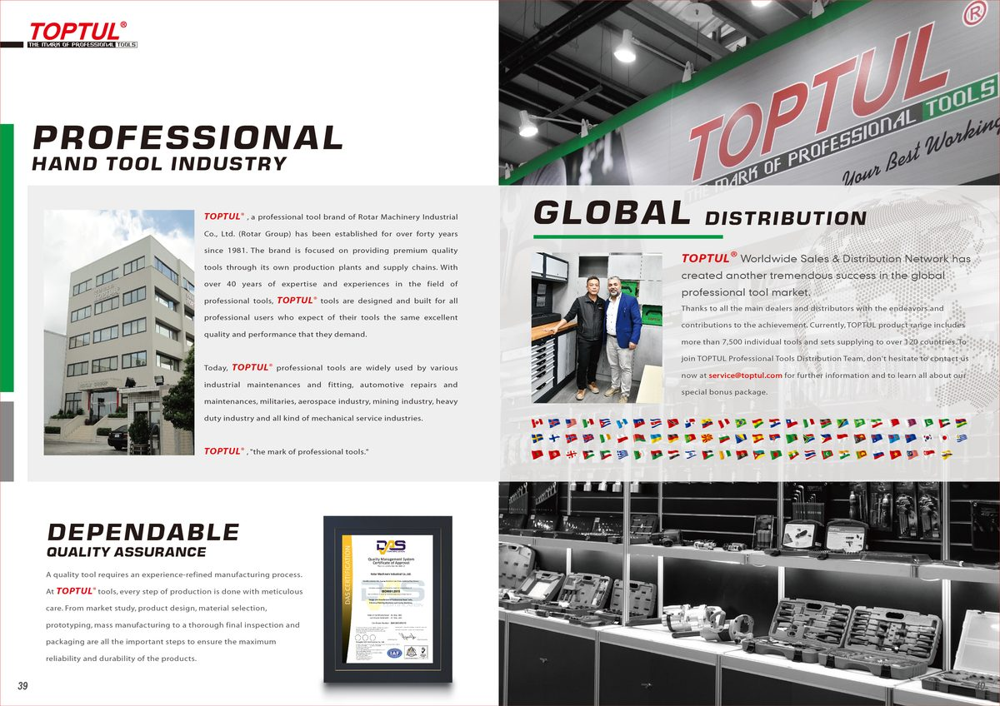
[ 型錄跨頁 ] 2026 產品介紹頁 (01) - 企業形象與全球經銷版圖設計理念：型錄首篇形象跨頁，擔綱海外買主第一眼認識企業實力的關鍵任務。版面左側井然有序梳理企業 40 年技術研發大事記、台中現代化營運總部實景與 ISO 9001 檢驗認證；右側以高精度世界地圖結合百餘國國旗圖示，視覺化呈現品牌行銷全球的龐大經銷網絡與服務據點。
工具：InDesign (主版網格與多國文字排版)、Illustrator (向量世界地圖與旗幟繪製)、Photoshop (建築廠區空拍校正)">
2026 產品介紹頁 (01)
型錄開篇企業簡介跨頁，整合 40 年工藝沿革、總部廠區空拍、ISO 認證與全球經銷版圖。
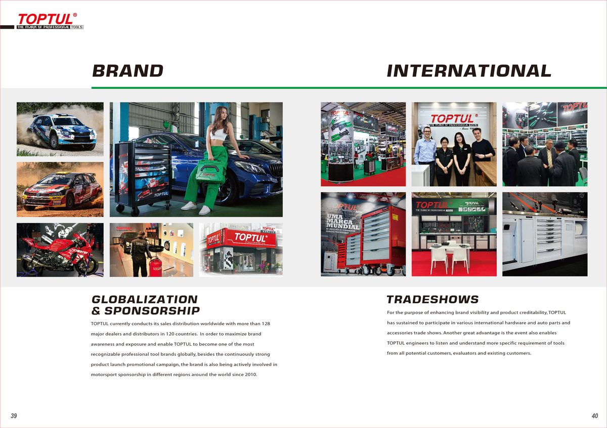
[ 型錄跨頁 ] 2026 產品介紹頁 (02) - 頂級賽事贊助與全球專業大展設計理念：以實證角度展示品牌在國際極限運動與商業市場的活躍度。跨頁嚴選達卡越野賽事、國際重機錦標賽技師於泥濘高溫惡劣環境下使用工具的震撼抓拍，搭配德國法蘭克福展 (Automechanika) 與科隆五金大展的特裝攤位盛況，建立深受全球職業車隊信賴的專業形象。
工具：InDesign (多圖格線對齊編排)、Photoshop (動態賽事抓拍高動態範圍修整)">
2026 產品介紹頁 (02)
紀錄拉力賽車後勤贊助、重機賽事實測，以及德國法蘭克福汽配展與科隆五金展國際參展實況。
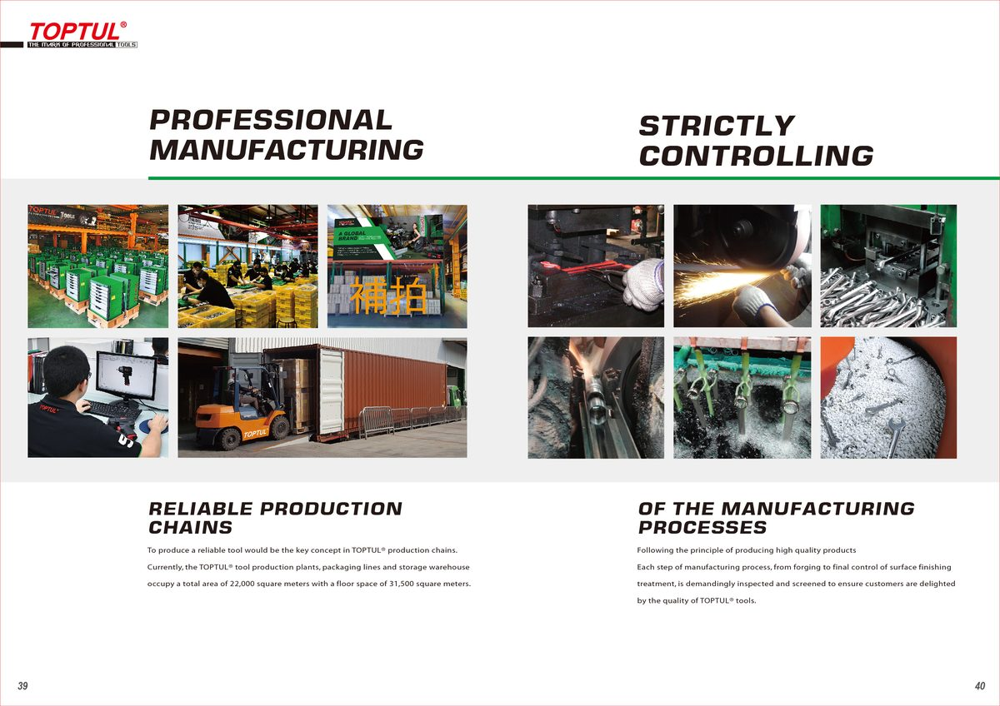
[ 型錄跨頁 ] 2026 產品介紹頁 (04) - 一貫化智慧製造與鍛造加工產線設計理念：以嚴謹的工業流程攝影揭密產品誕生歷程。跨頁左側展示千噸級高溫自動模鍛機與高精度 CNC 複合加工線，右側清楚圖解高溫連續熱處理滲碳退火爐與多道環保抗蝕電鍍池，透過工廠實景讓海外客戶直觀理解每一把扳手兼具高韌性與抗磨損的製程關鍵。
工具：InDesign (工業製程圖文網格)、Photoshop (高溫鍛造火光與產線環境抑噪修色)">
2026 產品介紹頁
展示高溫落錘鍛造、CNC 精密銑削、全自動熱處理爐與自動電鍍產線，傳遞高規製造硬實力。
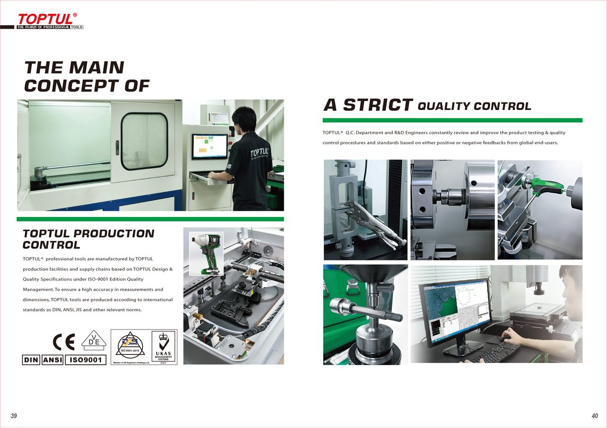
[ 型錄跨頁 ] 2026 產品介紹頁 (05) - 國家級品質保證實驗室與檢測標準設計理念：展現產品超越 ANSI / DIN 國際標準的科學實證跨頁。清晰呈現扭力極限破壞測試機、全數位洛氏硬度計、百小時中性鹽霧防鏽測試箱與三次元高精密量測儀等專業實驗室設備，藉由具體量測數據與精密指針圖示，建立無可撼動的專業信賴感。
工具：InDesign (精密量測數據表格編排)、Photoshop (檢驗設備光影純淨度校正)">
2026 產品介紹頁 (05)
詳解數位扭力破壞測試、洛氏硬度計、鹽霧耐腐蝕測試與三次元量測，呈現超越標準的品質承諾。
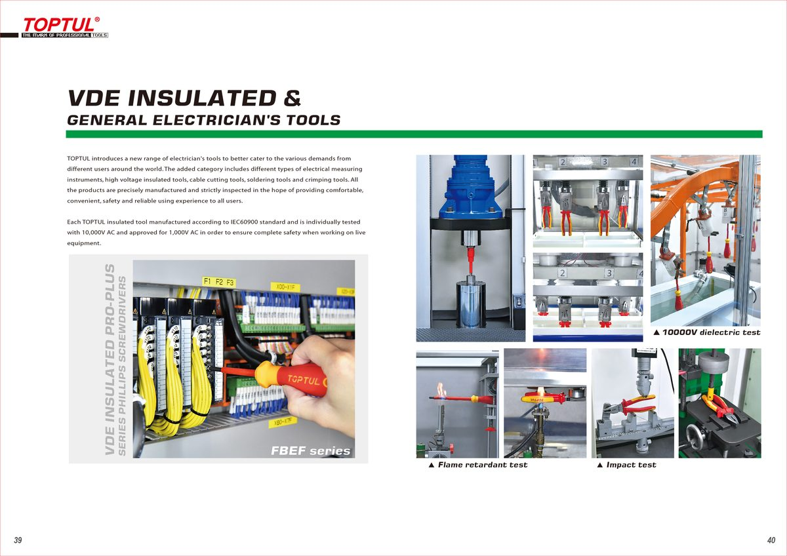
[ 型錄跨頁 ] 2026 產品介紹頁 (06) - 嚴苛 VDE 絕緣工具安全認證檢測設計理念：深入說明絕緣工具如何取得歐盟最具權威之 VDE / IEC 60900 國際認證。跨頁圖解 10,000V 水中通電防穿透高壓測試、-25°C 低溫冷凍衝擊撞擊試驗、手柄高負重拉拔防脫落檢驗及垂直燃燒阻燃試驗，以科學圖表與照片還原最嚴格的安全把關流程。
工具：InDesign (安全規章欄位排版)、Illustrator (高壓安全標示向量轉換)、Photoshop (實驗照片光線增強)">
2026 產品介紹頁 (06)
圖解 10,000V 水中通電耐穿透測試、-25°C 極端衝擊與拉拔阻燃檢驗，符合歐盟最高安全認證規範。
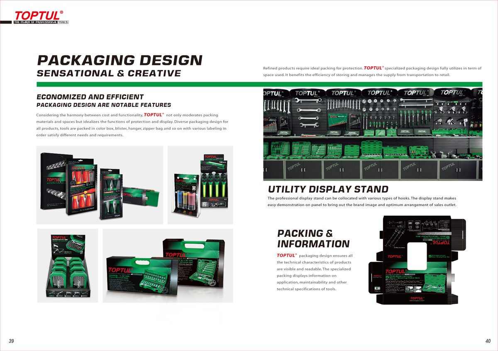
[ 型錄跨頁 ] 2026 產品介紹頁 (07) - 通路零售包裝與專業展售陳列架設計理念：針對全球經銷門市零售規劃之系統性陳列方案跨頁。內容包含專利防竊手工具吊卡刀模結構、多色系識別標籤、外銷高強度瓦楞彩盒，以及為經銷商規劃之單面 / 雙面穿孔五金模組化展示架，協助海外店家快速建立高坪效且整齊劃一的品牌展售端點。
工具：InDesign (商品陳列矩陣排版)、Photoshop (展示架與五金產品情境渲染)、Illustrator (展示架模組尺寸圖)">
2026 產品介紹頁 (07)
展示多款防竊吊卡刀模、環保紙盒包裝，以及可自由擴充之模組化金屬五金展示貨架系統。
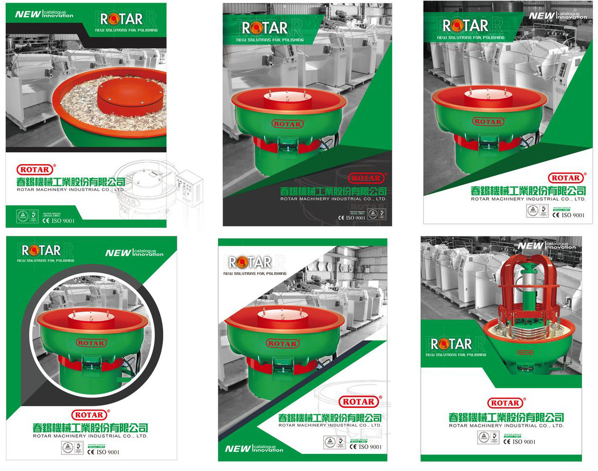
[ 封面設計 ] ROTAR 專業機械工業型錄封面設計理念：為工業機械工具品牌 ROTAR 量身打造之年度總目錄封面。主視覺採企業標準深綠色為底蘊，運用斜向俐落的金屬幾何線條與零件等角透視網格交織，打破重機械型錄沉悶刻板的陳舊印象，呈現洗鍊、俐落且具高度工業前瞻性的國際品牌格局。
工具：Illustrator (幾何斜切骨架與金屬銀向量排版)、Photoshop (底紋雜訊質感烘托)、InDesign (裝訂落版)">
機械品牌型錄封面
ROTAR 工業機械年度型錄封面，以沉穩科技綠結合幾何透視網格，詮釋重工機具的硬派精密感。
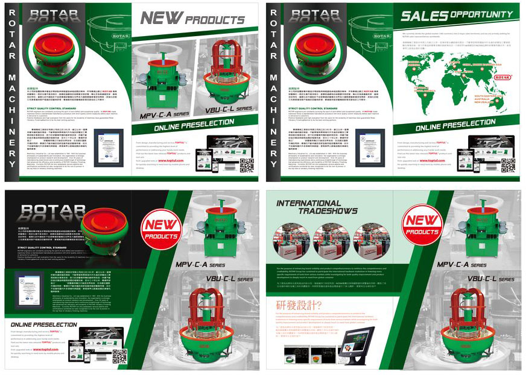
[ 內頁設計 ] ROTAR 機械型錄封面裡（IFC）企業形象頁設計理念：型錄掀開第一印象之封面裡（Inside Front Cover）扉頁規劃。視覺語彙完全呼應封面的幾何折線動態，結合總經理致詞簽名、品牌核心精神標語與各項歐美品質標準認證標章，透過沉穩洗練的中英雙語排版，奠定整本目錄厚重嚴謹的企業信任基礎。
工具：InDesign (雙語文字階層排版)、Illustrator (認證標章標準化重繪)">
目錄封面裡設計
型錄封二（IFC）形象扉頁，延續金屬折線語彙，整合經營者理念、品質認證標章與研發承諾。
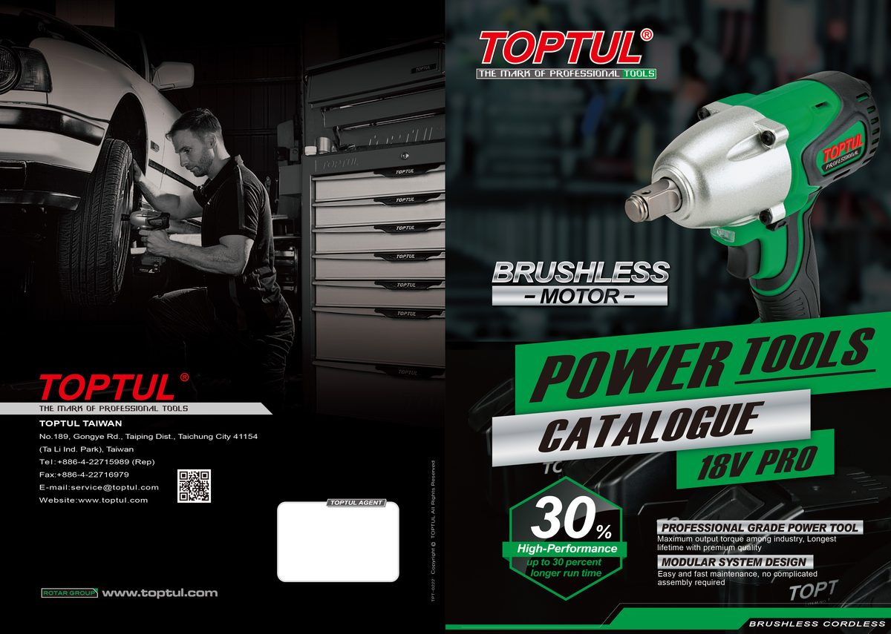
[ 特輯封面 ] 專業充電式電動工具特輯型錄封面設計理念：針對專業級鋰電無碳刷（Brushless）手持電動工具系列規劃之專刊封面。微距捕捉衝擊扳手機身的高強度金屬齒輪箱與防滑握把肌理，藉由掠過工具外緣的冷調科技光束強化「Power & Efficiency」動力訴求，精準鎖定追求高施工效率的汽車底盤維修技師。
工具：Photoshop (高反差金屬光影修圖與粒子特效)、Illustrator (動力標章標準字設計)">
電動工具目錄封面
高階無碳刷衝擊扳手特寫為主視覺，結合金屬科技光芒與高對比色系，主打汽車後勤專業動力。
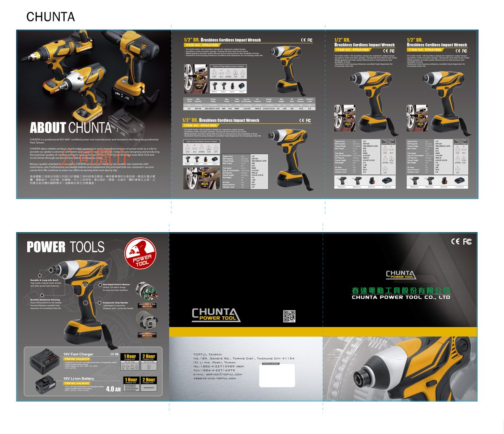
[ 手冊設計 ] 充電式電動工具系列雙面三摺目錄設計理念：展會活動與業務外勤專用的輕巧三摺宣傳手冊（共六個完整頁面）。精準考量摺疊開啟時的讀者視覺動線，正面展開第一眼聚焦旗艦無刷機型與核心技術亮點，內頁全展開則以標準化欄位整齊羅列全系列空載轉速、衝擊頻率、扭力段數表及同平台電池充電座通用配件指南。
工具：InDesign (三摺折頁落版與出血線安全邊距把控)、Illustrator (向量扭力圖表繪製)">
電動工具三摺目錄
雙面六頁面便攜型手冊，清晰展開各款電鑽與扳手之扭力曲線、規格料號及通用鋰電平台相容性。
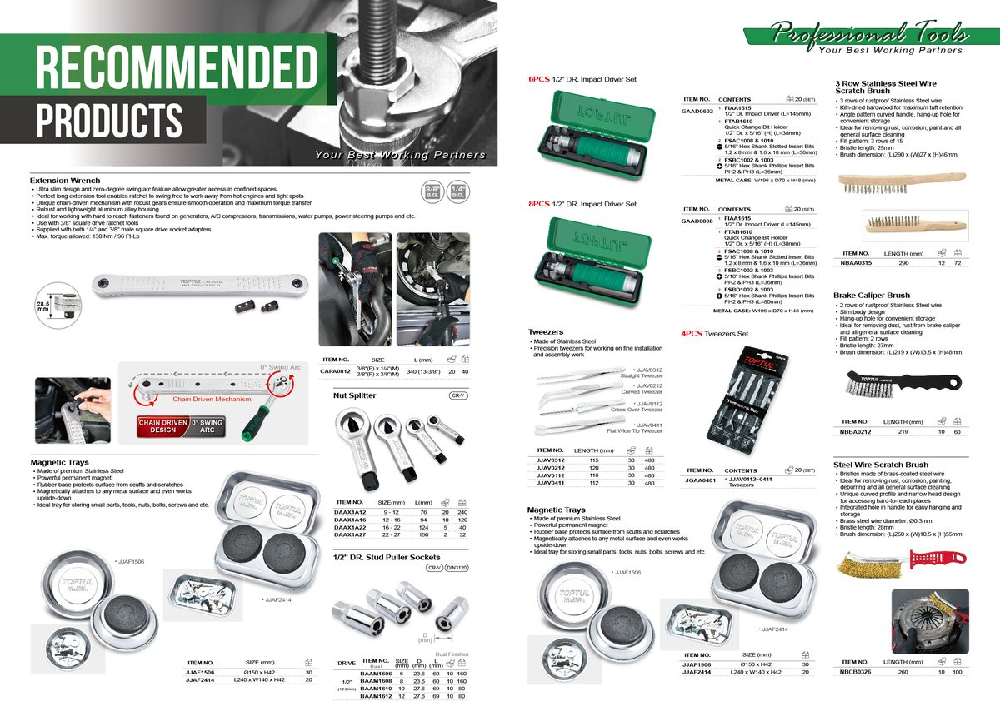
[ 規格排版 ] 工業手工具多品項規格內頁排版系統設計理念：示範標準化高密度技術型錄的網格排版系統。頁面上方配置精密等角透視黑白工程圖面與機構尺寸標註（L, D1, D2, S），下方以高度邏輯化的多欄位表格井然羅列公制（mm）與英制（inch）尺寸、總重、包裝數與標準訂購代碼，確保大量料號在嚴苛印刷條件下依舊清晰易讀。
工具：InDesign (資料庫欄位樣式建立與巢狀樣式排版)、Illustrator (工程等角剖面向量繪製)">
目錄內頁規格排版
工業級多欄位規格頁排版範例，整合等角透視零件線稿、公英制規格對照與 DIN/ISO 規範編碼。
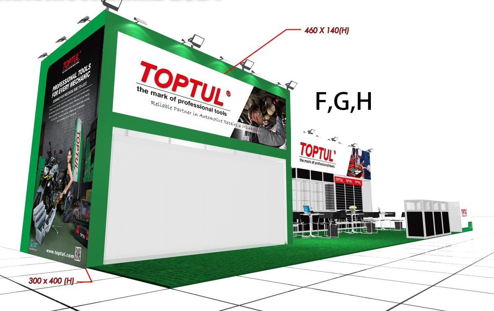
[ 空間展覽 ] 2024 德國法蘭克福汽配展特裝攤位 3D 透視合成設計理念：針對 Automechanika Frankfurt 展位 F、G、H 區規劃之特裝空間 3D 透視模擬。主入口以高 4 米之品牌綠色結構搭配側邊巨幅形象海報，上方橫樑標註 460x140cm 燈箱尺寸，配置 TOPTUL 招牌與底盤維修主視覺，結合綠色地毯、洽談區與展品背板，提供現場搭建施作之立體空間依據。
工具：Photoshop (3D 空間透視打光與材質貼圖合成)、Illustrator (攤位看板標註與展板大圖輸出完稿)">
法蘭克福展攤位合成 1
2024法蘭克福汽配展特裝攤位 3D 透視模擬，標註 300x400cm 與 460x140cm 結構尺寸，結合品牌綠拱門與汽修實境視覺。
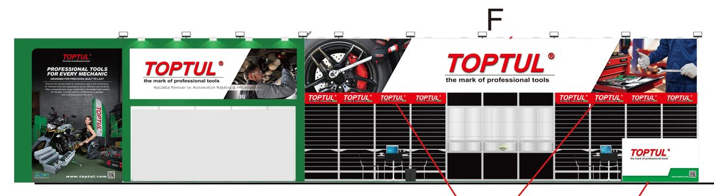
[ 空間展覽 ] 2024 德國法蘭克福汽配展 F 區正立面展開示意設計理念：法蘭克福展 F 區攤位正立面視覺展開圖。全景排布左側形象高塔、中央煞車卡鉗扭力緊固與工具車操作實務特寫橫幅，以及連續性黑白展板展示網格，標註燈具投射角度與標準色彩規範，利於展場施工廠商精確核對壁面圖形比例。
工具：Illustrator (正立面比例展開排版、施工引線標註)、Photoshop (修圖合成與色彩校驗)">
法蘭克福展攤位合成 2
法蘭克福汽配展 F 區攤位正立面展開示意，完整展現實體壁面隔間、煞車卡鉗維修橫幅與網格展示背牆配置。
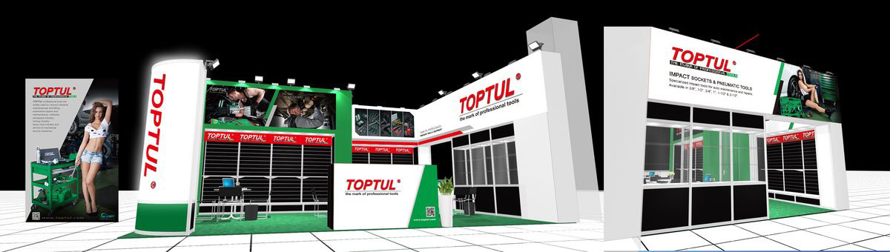
[ 空間展覽 ] 2024 德國科隆五金展（Eisenwarenmesse）特裝攤位合成設計理念：專為世界最大五金工具展「德國科隆五金展」規劃之現代工業風展位。主體採用黑色粉體烤漆鋁合金桁架（Truss）搭建堅固骨架，配置 4000K 自然白光專業軌道投射燈，精準突顯金屬工具的切削細節與拋光光澤；中央階梯式立體展示台打造極具層次的專業視覺焦點。
工具：Photoshop (空間擬真燈光衰減計算與材質疊加)、Illustrator (大尺寸高空包柱海報排版)">
德國科隆汽配展攤位合成
Eisenwarenmesse 特裝設計，黑色桁架結合高演色軌道投射燈，分區呈現重型工業手工具。
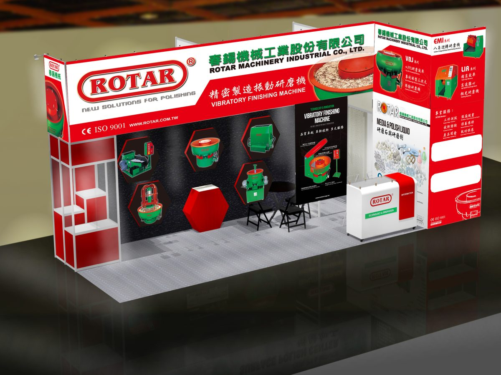
[ 空間展覽 ] 台北國際工具機展（TIMTOS）攤位空間模擬設計理念：台北國際工具機展特裝攤位模擬。考量機械工具機零件與重型切削刀具的重量與防護需求，展台採用加強型鋼製結構與安全防撞倒角包覆。分區清楚標記銑刀、車刀、夾治具與測量儀器專區，營造井然有序的重工業加工專業氣場。
工具：Photoshop (展場實景光影替換與透視貼圖)、Illustrator (工程文字標示與導引背板)">
台北工具機展合成示意
針對 TIMTOS 精密加工專業買家設計，強調高剛性展台承重結構與大型工件配件分類展示。
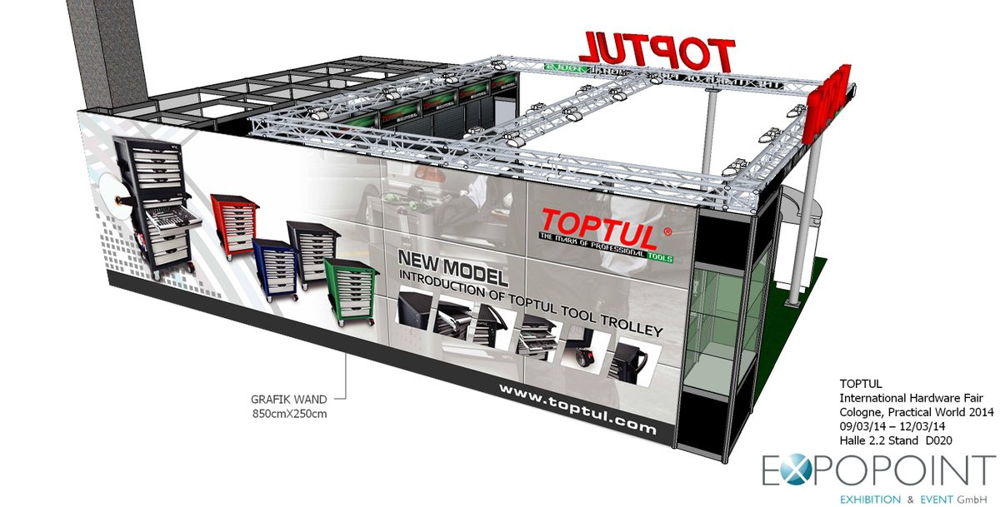
[ 空間展覽 ] 國際巡迴展模組化快組展架系統示意設計理念：專為海外代理商在當地自辦展覽與經銷大會規劃之標準化展具系統。全套結構採用快拆鋁合金骨架與阻燃抗皺熱昇華布旗，可收納至標準海運輪椅箱內。結構支援 3x3 米單格或 3x6 米長條型攤位彈性自由延伸，大幅降低各國代理商的海外展覽建置成本。
工具：Illustrator (模組拆解組裝結構示意繪製)、Photoshop (快組展架與空間布幕實況渲染)">
國際展覽空間示意
為海外經銷商打造之可拆卸模組化展架系統，兼具海運裝箱防護與 3x3m / 3x6m 攤位彈性延伸。
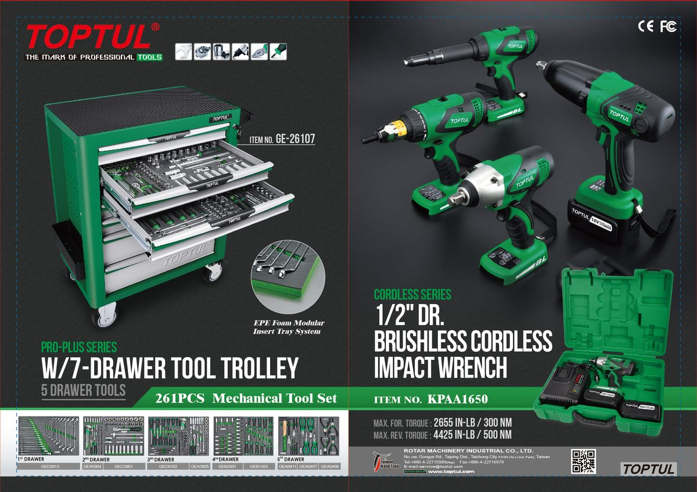
[ 平面廣告 ] 2017 手工具工會專刊廣告設計理念：將工具置入真實汽修維修廠房的實景式廣告。主打旗艦款雙色重型工具推車與車底作業專用工具組，藉由地毯式陳列展示數十款抽屜分類模組，傳遞「專業車廠一站式完整解決方案」的強大供貨能力，建立車輛維修市場指名度。
工具：Photoshop (廠房環境調光與工具車群組高光微調)、Illustrator (雜誌版面編排)">
2017手工具工會雜誌稿
主打旗艦款雙色重型工具推車與車底作業專用工具組，與精密汽修專用手工具的後勤能量。
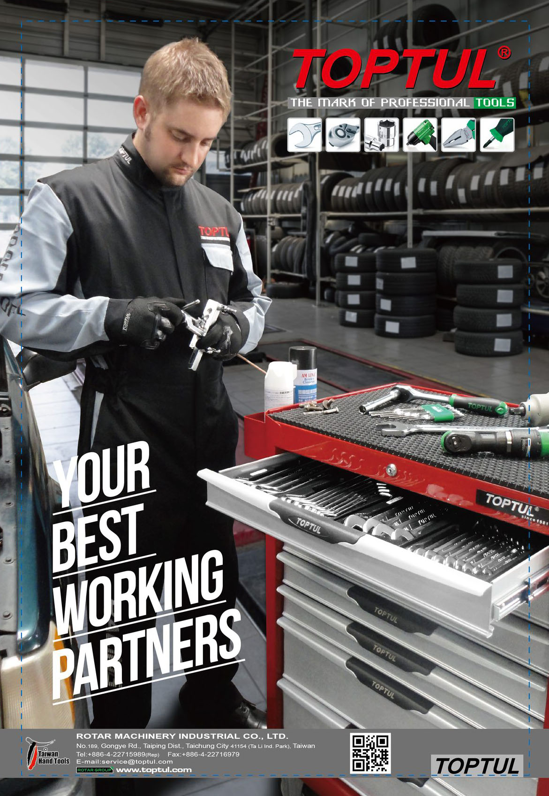
[ 平面廣告 ] 2018 手工具工會專刊廣告設計理念：以真實汽車保養廠與輪胎庫存區為實景拍攝背景，聚焦於身穿 TOPTUL 專業制服之技師手持特工進行車身檢修的專注神情。前景以醒目的紅色 7 抽工具推車拉開展示整套梅開扳手組，搭配車台上的氣動工具與棘輪柄，直觀呼應左下角「YOUR BEST WORKING PARTNERS」品牌標語；右上角並行整合六大主力產品類別圖示，強化一站式專業後勤能量。
工具：Photoshop (實景棚拍修光與工具車金屬質感調正)、Illustrator (雜誌落版與字級排版)">
2018手工具工會雜誌稿
以真實汽修廠實景結合紅色多抽工具車，呈現技師專注作業神情，呼應「YOUR BEST WORKING PARTNERS」專業夥伴定位。
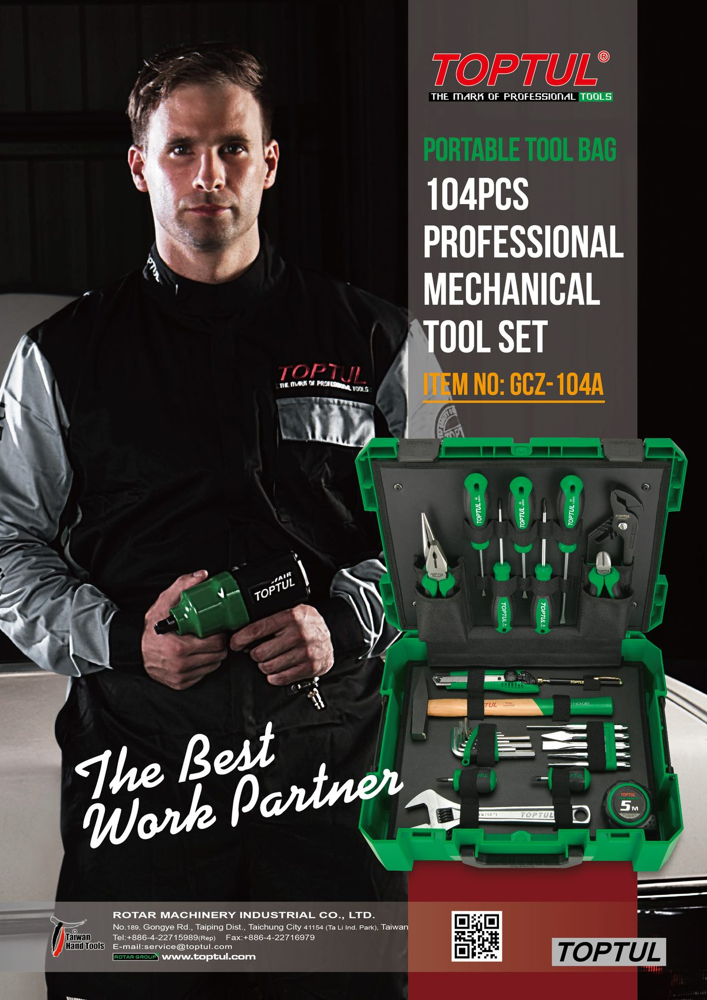
[ 平面廣告 ] 2021 台灣手工具專刊廣告設計理念：主推 104 件組專業機械手提工具箱（ITEM NO: GCZ-104A）。以正視展開視角完整展示箱內上下雙層收納結構——上蓋插袋整齊固定鉗類與膠把螺絲起子，下層高密度成型泡棉精準嵌合木柄鐵鎚、六角扳手、活動扳手與捲尺等必備工具；左側搭配技師手持氣動衝擊扳手的穩健站姿，佐以手寫草寫體「The Best Work Partner」，兼顧工業專業度與外勤便攜性訴求。
工具：Photoshop (工具箱商品去背與雙層金屬反光細節修飾)、Illustrator (產品料號階層文字與規格排版)">
2021手工具工會雜誌稿
主打 104 件組專業手提工具箱 (GCZ-104A)，以雙層展開視角詳盡展示鉗起子與木柄鐵鎚收納，搭配技師持氣動扳手形象。
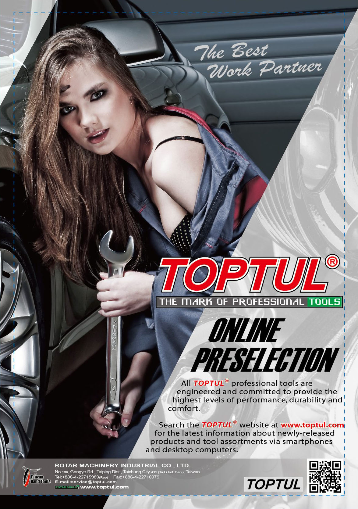
[ 平面廣告 ] 2022 手工具工會專刊廣告設計理念：宣傳品牌官方「ONLINE PRESELECTION」數位線上選品系統。主視覺打破純陽剛黑手框架，以女技師手持 34mm 巨型鉻釩鋼梅開扳手蹲坐於汽車輪圈旁的時尚工業風為主景；版面右側運用大角度斜切色塊承載數位檢索引流資訊，清楚說明買家可透過手機與電腦至官網即時查詢最新品項與工具組規格，達成紙電整合的品牌行銷效益。
工具：Photoshop (人物與車輛金屬反光合成調色)、Illustrator (斜切排版網格與數位選品文字階層)">
2022手工具工會雜誌稿
主打「ONLINE PRESELECTION」官網線上選品系統，以女技師手持 34mm 巨型扳手蹲於車輪旁之時尚工業風引導數位查規。

葡萄牙海外雜誌廣告
葡萄牙在地汽修專刊全頁廣告，葡文編排與當地經銷據點資訊，推廣歐洲旗艦版工具車。
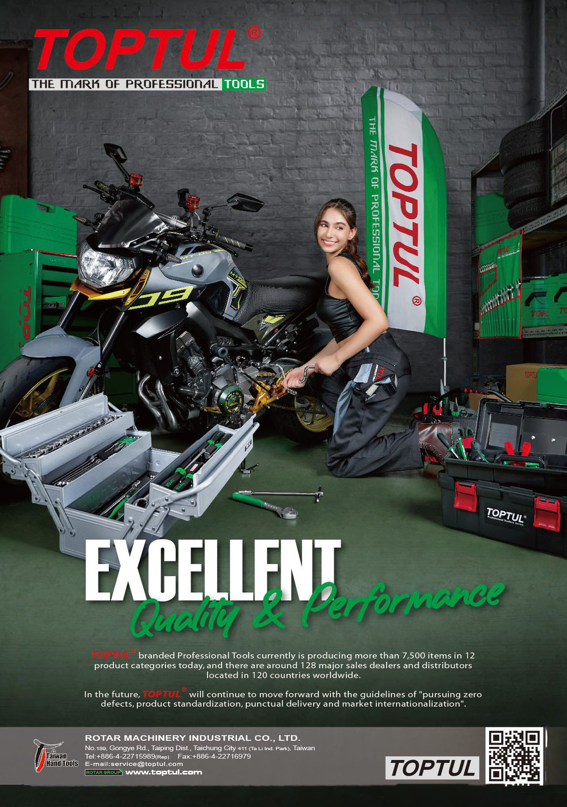
[ 平面廣告 ] 2023 台灣手工具專刊廣告設計理念：鎖定重型機車保修與極限改裝市場。畫面以經典街跑重機 Yamaha MT-09 為主體，捕捉女技師跪姿微調踏板連桿之實作瞬間；左側前景配置三層展開式金屬手提工具箱與套筒組，右後方豎立品牌綠白刀旗；主視覺下半部以力量感粗黑體「EXCELLENT」疊加綠色草寫「Quality & Performance」，並列出全球 120 國、128 家經銷商與 7,500 餘項產品之供貨實力。
工具：Photoshop (重機金屬漆面光澤與三層鐵箱陰影校正)、Illustrator (複合字體排版與數據圖表編排)">
2023手工具工會雜誌稿
聚焦 Yamaha MT-09 街跑重機維修情境，前景配置三層展開式金屬鐵箱，以「EXCELLENT Quality & Performance」展現重機保修能量。
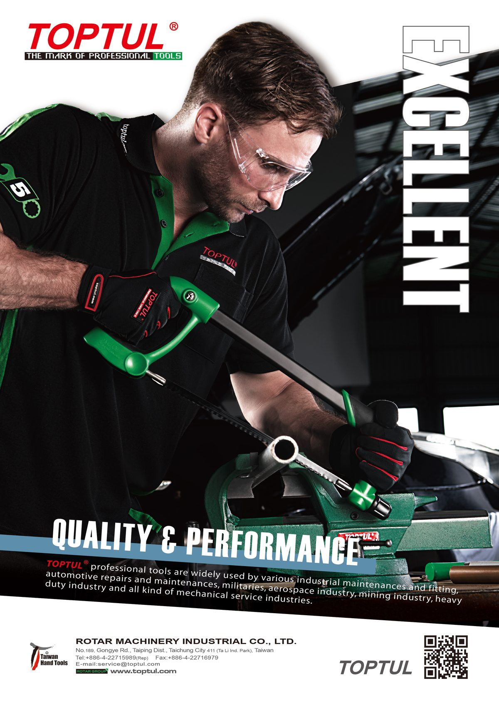
[ 平面廣告 ] 2024 台灣手工具專刊廣告（金屬切削實況）設計理念：真實呈現高強度金屬切削工序。畫面特寫技師配戴防護護目鏡與防滑手套，雙手穩固施力操作 TOPTUL 綠黑雙色專業鋼鋸架，鋸切緊固於重型綠色桌上虎鉗之金屬鋼管；右側以頂天立地的巨幅直向「EXCELLENT」文字搭配藍灰斜色帶上的「QUALITY & PERFORMANCE」，有力宣示工具在極限鋸切工況下的抗形變高剛性與鋒利耐久度。
工具：Photoshop (高反差金屬光影強化與火花微粒修整)、Illustrator (直向巨幅字體排版與印前出血規範)">
2024手工具工會雜誌稿
特寫技師雙手操作專業鋼鋸架、鋸切虎鉗固定金屬鋼管之工藝動作，右側直向「EXCELLENT」凸顯重工業切削剛性。
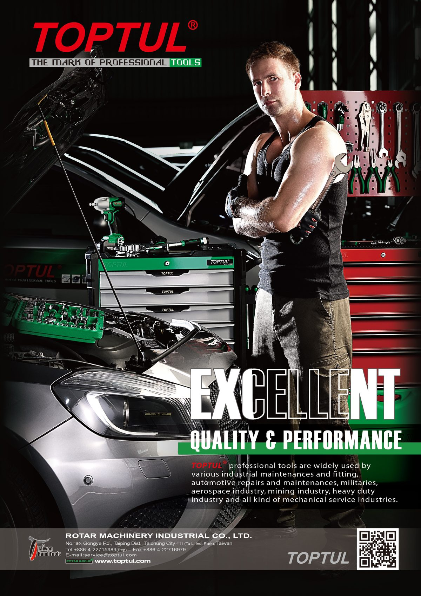
[ 平面廣告 ] 2024 台灣手工具專刊廣告（汽修硬漢形象）設計理念：塑造專業、剛勁的頂級車廠技師硬派形象。身穿黑色背心的健碩技師自信交叉雙臂、肩扛拋光鍍鉻梅花開口扳手；背景緊湊整合掀開引擎蓋的進口轎車、綠色 7 抽工具推車與滿板工具壁掛架，營造裝備精良、蓄勢待發的汽修後勤氣場；右下角以「EXCELLENT」結合綠色色帶「QUALITY & PERFORMANCE」，精準傳遞第一線維修團隊的信賴與力量。
工具：Photoshop (肌肉光影高動態範圍調整與金屬工具棚拍校色)、Illustrator (廣告文案與雜誌跨頁出血完稿)">
2024手工具工會雜誌稿
以健碩技師肩扛梅開扳手為主視覺，結合掀開引擎蓋轎車、綠色工具車與工具壁板，展現汽修第一線的硬派信賴感。
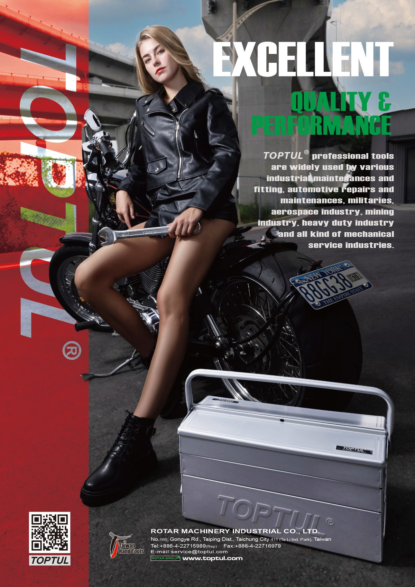
[ 平面廣告 ] 2026 最新手工具工會專刊主視覺廣告設計理念：美式重機與俐落時尚騎士跨界視覺企劃。版面左側導入飽和度極高的鮮紅色滿版縱向色帶，內嵌大型旋轉白色「TOPTUL®」商標作為霸氣視覺錨點；主體由身著皮衣之女性騎士跨坐於客製美式巡航重機上、雙手平持鍍鉻扳手，前方地面端正陳列沖壓品牌立體字之經典銀色三層金屬鐵箱；搭配高架橋戶外水泥結構，以「EXCELLENT QUALITY & PERFORMANCE」呈現兼具重機狂放美學與頂級工藝的國際品牌視野。
工具：Photoshop (戶外採光色彩平衡與重機電鍍配件修飾)、Illustrator (滿版紅底視覺分割與向量標準字完稿)">
2026手工具工會雜誌稿
左側鮮紅直條滿版大 LOGO，結合皮衣女騎士跨坐美式巡航重機與經典銀色金屬手提箱，展現狂放美學與頂級工藝。
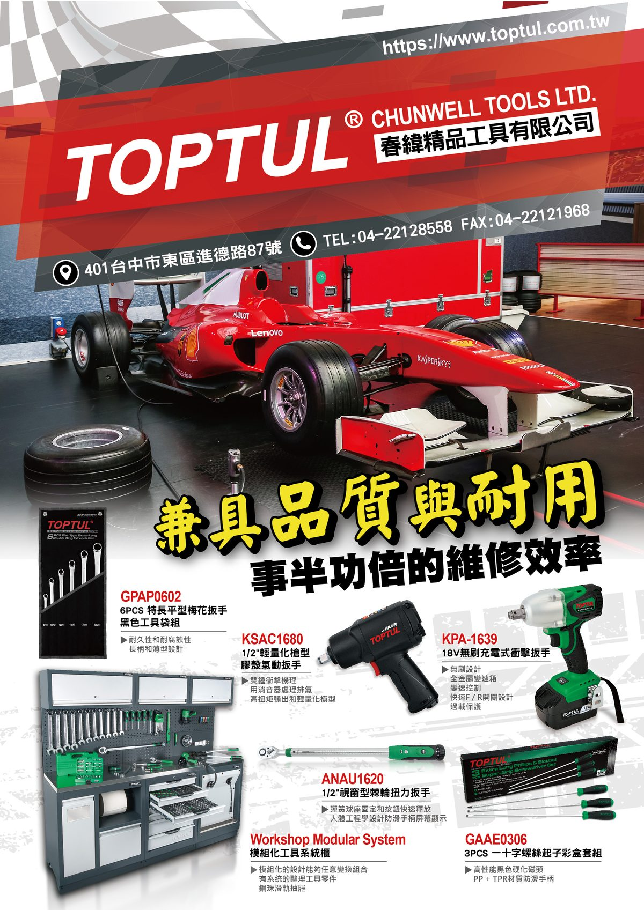
[ 通路傳單 ] 2021 經銷通路新品促銷 DM（版面 05）設計理念：針對第一線汽修保養廠業務推廣規劃之全彩 DM。首面主打高 CP 值的基礎汽修工具整套優惠專案，明確規劃搶眼的特惠價格標章與贈品回饋區塊，內部羅列完整工具內容規格、料號與建議售價，提供業務人員向保養廠老闆推銷時最強而有力的紙本促銷利器。
工具：Illustrator (促銷色塊版面與價格標籤向量排版)、Photoshop (產品合購組修圖)">
2021產品宣傳DM
經銷通路全彩雙面折頁促銷單，規劃汽修廠專用套裝優惠、滿額贈禮與清晰料號價格表。
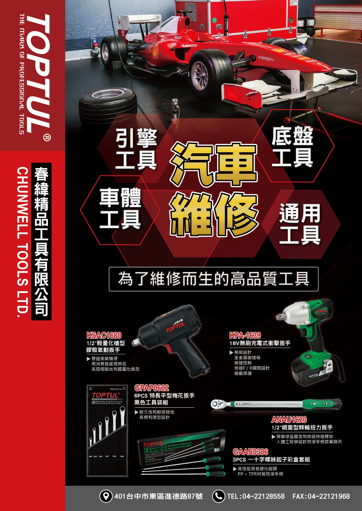
[ 通路傳單 ] 2021 產品宣傳促銷傳單（版面 07）設計理念：針對底盤與制動系統專項維修規劃之專題促銷 DM。嚴選 1/2 吋超輕量氣動扳手、輪胎專用防刮薄壁套筒組及煞車分泵活塞調整特工等熱銷消耗品項，以高對比黃黑警示配色刺激訂購慾望，大幅提升特定維修檔期的下單轉換率。
工具：Illustrator (高反差促銷版面與商品圖表對齊)、Photoshop (單品修飾)">
2021產品宣傳DM-2
聚焦氣動衝擊扳手、長套筒組與煞車卡鉗維修特工，高對比價目引導快速下單。
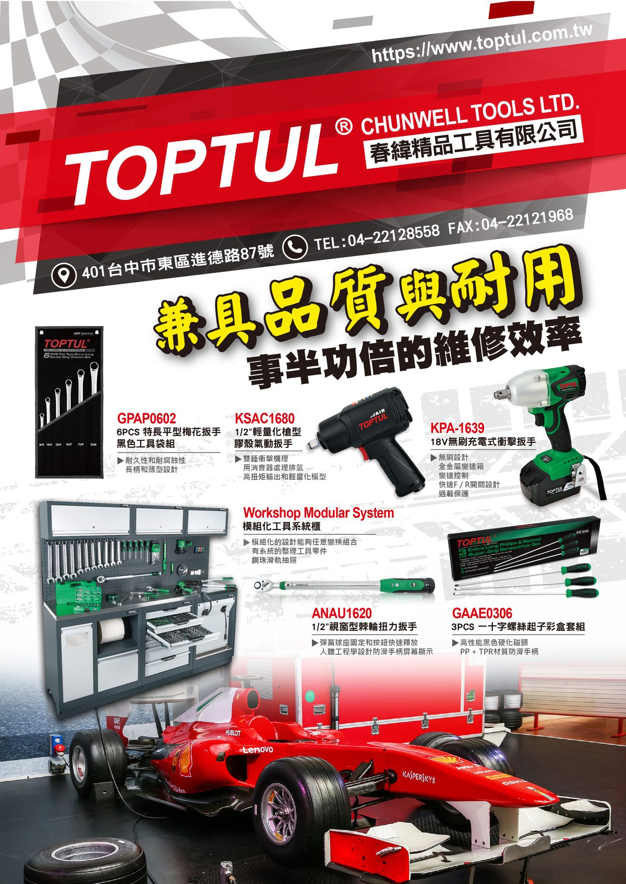
[ 通路傳單 ] 2021 產品宣傳傳單封底與訂單聯（版面 07a）設計理念：DM 摺頁最後一面的實體訂單聯與服務窗口總表。排版包含客戶填寫聯絡方式之標準表格、傳真/電話下單指引、北中南各區責任業務代表名單及全系列非人為損壞保固承諾細則，確保傳單具備實體導購與訂單回收的閉環實用性。
工具：Illustrator (表單表格繪製與印章備註欄格式化)、InDesign (全彩雙面印刷完稿)">
2021產品宣傳DM-3
促銷傳單封底訂單聯，包含各區業務聯絡窗口、傳真訂購單格式與產品保固條款明細。
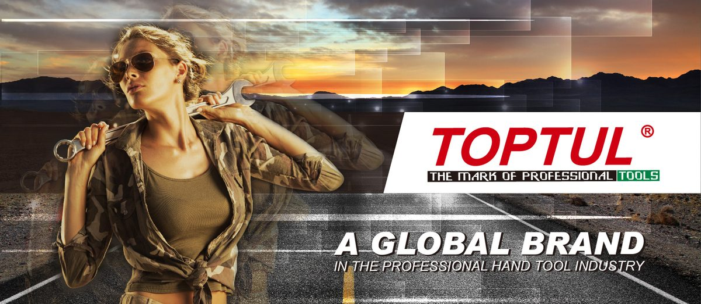
[ 戶外視覺 ] 2021 辦公室外牆海報 - A GLOBAL BRAND 系列設計理念：應用於廠區外牆之大尺寸形象橫幅。以夕陽暮色公路為背景，結合女性技師手扛大尺寸梅開扳手的主視覺，融入半透明科技光影方塊，右側以斜角白色區塊凸顯 TOPTUL 品牌標誌與「A GLOBAL BRAND IN THE PROFESSIONAL HAND TOOL INDUSTRY」標語，塑造具國際視野的專業手工具品牌形象。
工具：Photoshop (人物光影融合、暮色公路調色與透視光效處理)、Illustrator (向量標誌排版與文字規範編排)">
2021辦公室外牆海報
暮色公路背景結合女性技師肩扛梅開扳手之視覺，搭配科技方塊光效，傳達專業手工具國際品牌意象。
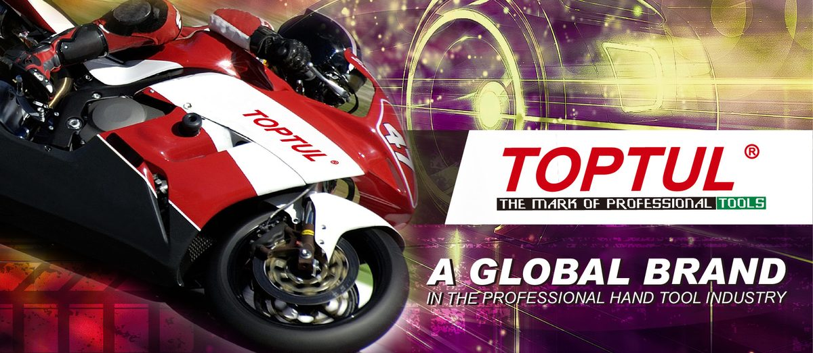
[ 戶外視覺 ] 2021 辦公室外牆海報 - 賽道競技系列設計理念：外牆大尺寸動態橫幅海報。選用貼地壓車過彎的賽事重機為主體，車身配置 TOPTUL 品牌標誌，背景結合紫色光軌、散景與動態儀表光環，突顯極速競技感，直觀連結專業手工具在重機維修與極限賽事中具備的高性能與信賴感。
工具：Photoshop (重機動態殘影與光軌合成、色彩對比調控)、Illustrator (斜切標準字與幾何版面編排)">
2021辦公室外牆海報
賽道重機極速壓車過彎主視覺，融合紫色動態光軌與散景，強化品牌在賽車與汽機車維修的專業實力。

工廠帆布設計01
現代保修廠實景結合旗艦工具車與手提工具箱，搭配墨綠斜切色塊，清楚呈現全製程品保承諾與專業定位。

工廠帆布設計02
工廠長條形橫幅帆布提案總覽，涵蓋氣動工具、手工具與工具車實操情境，以紅黑斜切幾何維繫高度識別一致性。
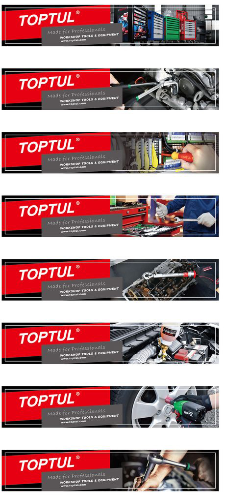
[ 廠區帆布 ] 廠區系列主題形象帆布（8 款情境展示總覽）設計理念：為廠區主要走廊與壁面規劃之模組化主題帆布。統一採用左側紅色品牌色塊、中間深灰「Made for Professionals」斜切標籤之標準版型，右側逐一展示工具車、引擎檢修、VDE 絕緣起子、棘輪扳手、汽門扭力設定、煞車注油、輪胎氣動拆卸與底盤施工等 8 大專業情境。
工具：Illustrator (模組化識別系統與版面規格制定)、Photoshop (8組工具操作特寫局部精修與光影調校)">
工廠帆布設計03
8款模組化系列主題帆布，完整涵蓋引擎檢修、絕緣電工、底盤保修與工具車管理等工況，建立標準化識別。
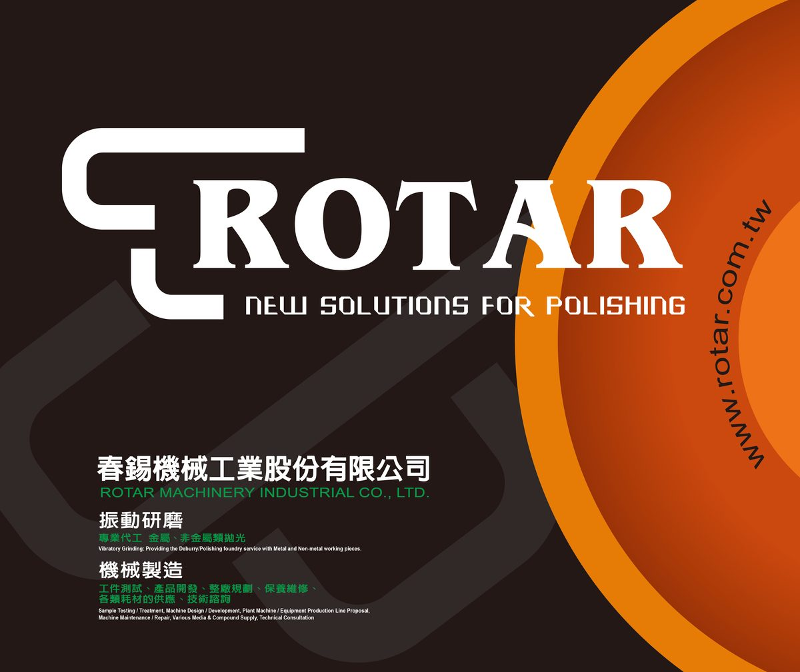
[ 廠區帆布 ] 春錫研磨廠一樓形象帆布（黑橘配色提案）設計理念：春錫研磨廠一樓廊道大型簡介帆布。以沉穩黑灰為底，結合右側暖橘色幾何圓弧破格設計，左側凸顯「ROTAR - NEW SOLUTIONS FOR POLISHING」標誌，下方條列「振動研磨」（金屬／非金屬代工拋光）與「機械製造」（工件測試、整廠規劃、耗材技術諮詢）兩大業務範疇，傳達專業俐落的機械製造形象。
工具：Illustrator (雙語業務項目排版、向量圓弧造型)、Photoshop (暗色系大圖噴繪色票調校與輸出檔管理)">
工廠帆布設計04
春錫機械一樓簡介帆布（黑橘配色款），統整「振動研磨」與「機械製造」核心業務，以黑灰底色襯托暖橘弧形視覺。
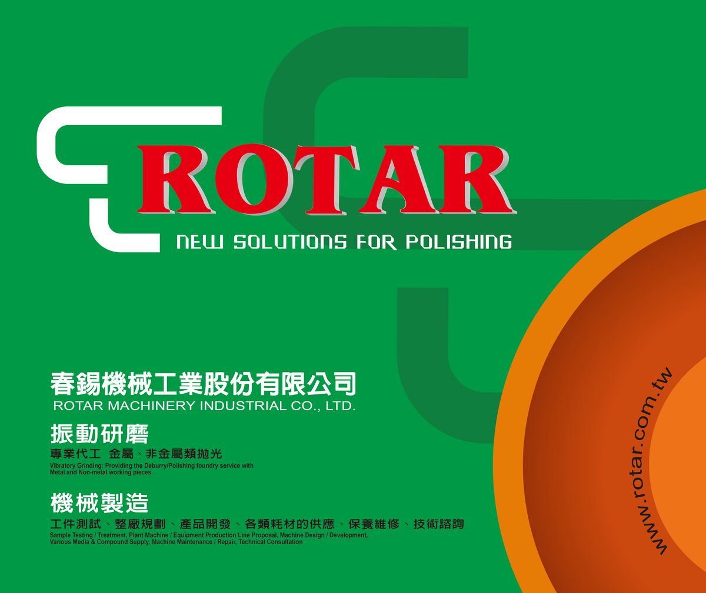
[ 廠區帆布 ] 春錫研磨廠一樓形象帆布（企業綠配色提案）設計理念：與 04 款採相同排版結構之替代配色提案。主色調轉為春錫企業識別代表色「工業深綠」，ROTAR 標誌以紅色立體字型強化跳色對比，右側維持橘色圓弧導引視覺。同樣呈現振動研磨代工與機械設備製造雙主軸，為廠房空間提供不同氛圍且高識別度的色彩選擇。
工具：Illustrator (企業標準色轉換、色彩對比微調)、Photoshop (大尺寸帆布噴繪色彩配置與輸出準備)">
工廠帆布設計05
春錫機械一樓簡介帆布（企業綠配色款），與 04 款採相同版面架構，改以春錫品牌深綠為主色系，提供不同廠房氛圍之配色提案。
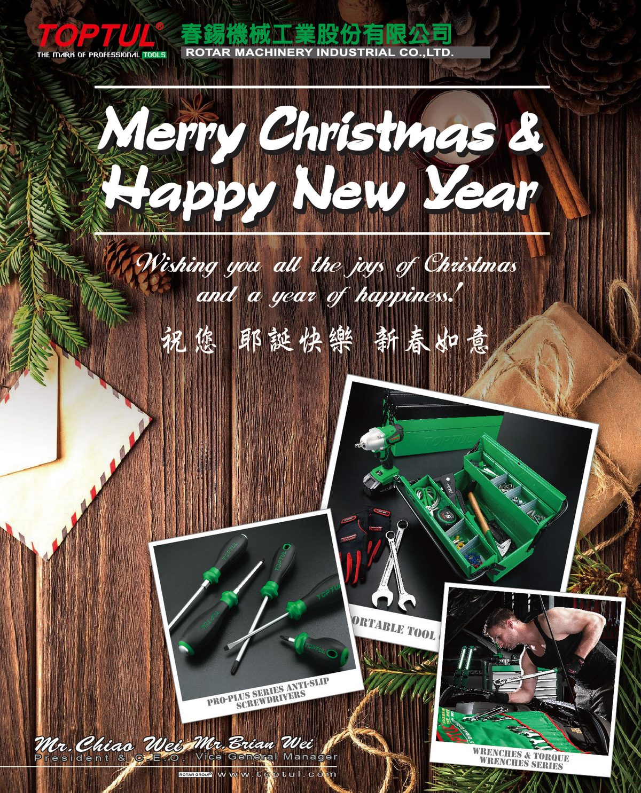
[ 節慶設計 ] 2021 TOPTUL 品牌年度聖誕賀卡設計理念：以溫暖質感的原木桌面為基底，陳列松針、松果、肉桂棒、暖光蠟燭與復古航空信封等節慶物件。畫面中央以拍立得相片形式，展示手提工具箱、Pro-Plus 防滑起子組與技師引擎檢修實景，在保有濃厚歐美聖誕節慶氛圍的同時，自然融入核心手工具產品線。
工具：Photoshop (實物靜物光影調色、拍立得相框透視合成)、Illustrator (中英文節慶祝福文字與高層簽署編排)">
2021toptul聖誕卡
原木桌面搭配松果、肉桂與耶誕信封，以拍立得相片形式展示綠色工具箱、防滑起子組與引擎檢修實景，營造溫暖節慶感。
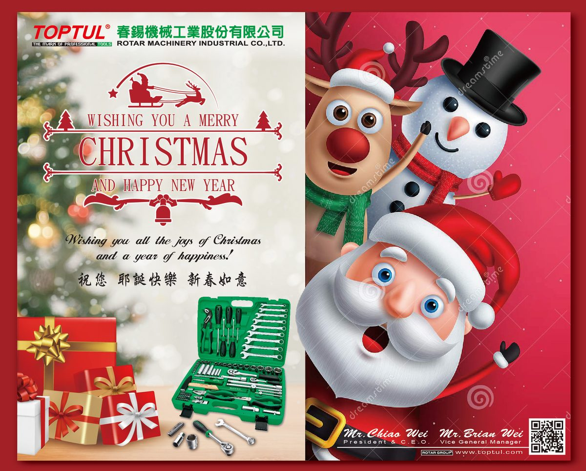
[ 節慶設計 ] 2023 TOPTUL 聖誕賀卡（版本 2）設計理念：採雙分割對比構圖的節慶賀卡。左側為散景聖誕樹與精美禮物盒，下方陳列展開的 TOPTUL 綠色綜合套筒起子工具箱；右側運用亮紅色底襯托立體 3D 卡通耶誕老人、麋鹿與雪人角色，搭配復古聖誕雪橇印章標題與中英賀詞，呈現活潑溫馨的年節氛圍。
工具：Photoshop (左側實物工具箱修圖與光影景深合成)、Illustrator (右側 3D 角色排版與節慶徽標標準字編排)">
2023聖誕卡版本
雙分割版面融合聖誕樹景深與 3D 卡通耶誕老人、雪人插畫，左下置入實體綠色綜合套筒工具箱，兼具童趣與專業產品印象。
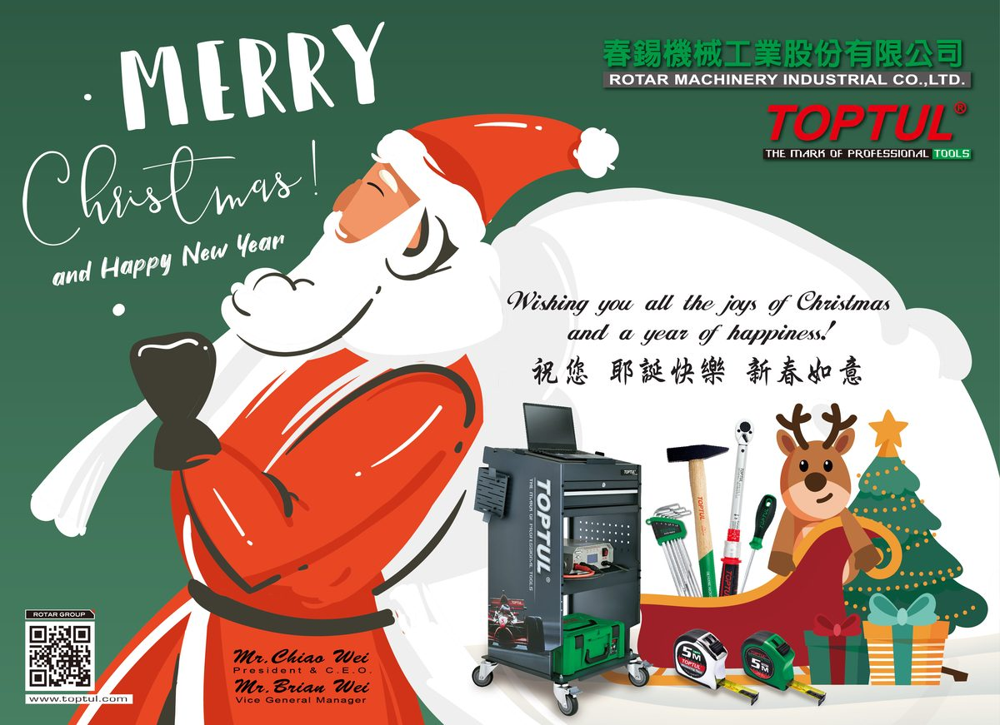
[ 節慶設計 ] 2024 TOPTUL 品牌聖誕賀卡設計理念：結合手繪插畫與 3D 產品渲染的節慶賀卡。以深邃沉穩的聖誕墨綠為底，描繪背著禮物袋踏雪前行的耶誕老人，身旁雪橇滿載 TOPTUL 旗艦工具推車、扭力扳手、木柄膠槌、捲尺與收納盒，將硬派專業工具擬化為佳節祝福的實用禮物，賦予品牌親和的人文溫度。
工具：Illustrator (手繪耶誕老人插畫與雪地向量構圖)、Photoshop (工具車及手工具實體光影去背融合)">
2024toptul聖誕卡
經典墨綠背景搭配手繪耶誕老人插畫，雪橇上滿載專業工具車、扭力扳手、膠槌與捲尺等產品，巧妙化身為實用聖誕禮物。
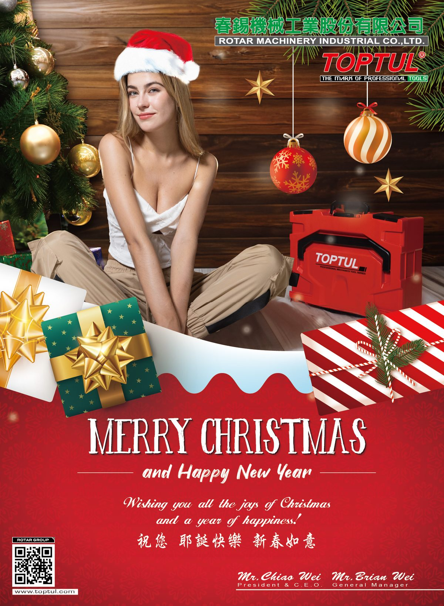
[ 節慶設計 ] 2026 TOPTUL 品牌最新聖誕跨年賀卡設計理念：情境棚拍結合版面設計的跨年賀卡。上半部以木屋居家場景搭配佩戴聖誕帽之模特兒，身旁搭配鮮紅色 TOPTUL 專業重型工具箱與精裝禮物盒；下半部以波浪積雪造型切換至節慶紅底，配置經典襯線「MERRY CHRISTMAS」主標與中英雙語賀詞，呈現時尚精緻的跨國賀卡風格。
工具：Photoshop (人物棚拍精修、光影調色與波浪雪地邊緣遮罩)、Illustrator (標準節慶字體排版與雙語署名設計)">
2026toptul聖誕卡
聖誕帽模特兒於溫馨木屋情境席地而坐，身側擺放紅色專業重型手工具箱，下方波浪雪地襯托精緻節慶紅底中英賀詞。
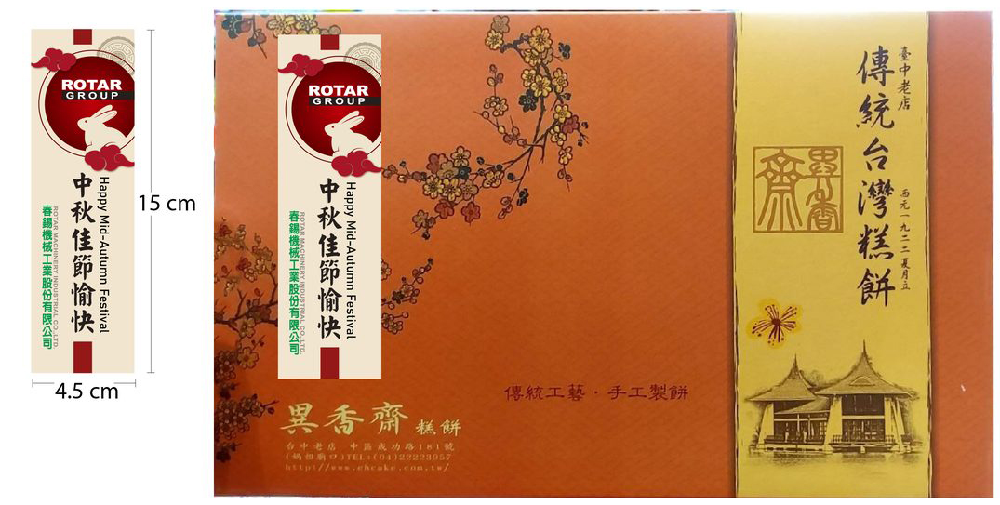
[ 包裝設計 ] 企業中秋伴手禮盒專用封裝長條貼紙設計理念：春錫集團致贈客戶中秋伴手禮盒之長條形腰封貼紙（標註 4.5 × 15 cm 刀模尺寸）。頂端配置紅底圓形 ROTAR GROUP 標誌搭配祥雲與奔月白兔剪影，中段為古典書法「中秋佳節愉快」與雙語公司名；右側搭配台中名店「異香齋」糕餅外盒之貼附實體模擬，完整展現年節禮品包裝的尺寸規範與封箱視覺。
工具：Illustrator (4.5x15cm 印刷刀模標註、祥雲玉兔向量繪製與排版)、Photoshop (禮盒封條實體貼附效果示意合成)">
節慶中秋禮盒封裝貼紙
4.5×15 cm 長條形封盒腰貼，結合 ROTAR 集團標誌與祥雲玉兔圖騰，標註尺寸規格並實物模擬於台中老店異香齋糕餅禮盒。
設計理念：巴勒斯坦授權經銷商 NORM 旗艦商用維修廂型車（Mercedes-Benz Sprinter 高頂長軸版）全車身大圖輸出展開規劃。精準對齊車輛板金接縫、側滑門滑軌與後掀門外框，左右車側滿版展示品牌綠黑賽車動態條紋與高階工具車隊伍，打造行駛於中東街道上極具辨識度的流動看板。
工具：Illustrator (1:10 汽車等比工程平面展開圖繪製)、Photoshop (超大解析車身合成與施工對位標示)">
巴勒斯坦 NORM 賽車車體廣告
Mercedes-Benz Sprinter 廂型維修車全車彩繪展開圖，精確迴避側滑門軌道與車窗結構。
.jpg)
ZS-609 安全帽賽車風彩繪
ZEUS 半罩式帽款 3D 曲面彩繪展開圖，銳利賽車速度流體線條避開曲面通風孔位。
設計理念：為高規格鋰電無刷衝擊扳手量身打造之工業級開箱廣告。棚拍佈光運用高對比冷光線條凸顯機身消光金屬外殼與人體工學包膠握柄，鏡頭高速微距特寫電池插拔卡榫的清脆反饋、正反轉指撥撥鈕與無段調速板機行程，並實測拆卸大扭力鏽蝕輪胎螺栓，展現強悍動能。
工具：Premiere Pro (快節奏開箱節奏卡點剪輯)、After Effects (動態規格資訊字卡與扭力指針動畫)">
TOPTUL 衝擊扳手開箱宣傳短片
暗色系棚拍布光，高速特寫電池裝卸卡準、雙向無級變速開關與高扭力拆卸實測。
設計理念：展示重型工程手提工具箱模組化設計的開箱短片。影片透過節奏明快的層次拆解運鏡，展示箱體雙側防脫安全金屬搭扣開合、上蓋內襯零件分類收納槽，以及專屬雙色防震 EVA 泡棉工具托盤的精準咬合，直觀傳遞其優異的防塵防水耐摔特性。
工具：Premiere Pro (打擊卡點節奏剪輯與擬真音效鋪陳)、DaVinci Resolve (高質感塑料光影調色)">
TOPTUL 多功能工具箱開箱宣傳短片
俐落展示箱體多層卡扣鎖定、自定義 EVA 泡棉工具槽與強悍耐壓結構。
設計理念：強調外勤便攜性的輕巧套筒工具組動態展示。以極簡純白商品棚為背景，微距鏡頭平滑掠過鏡面鍍鉻套筒金屬表面、高清晰度雷射雕刻公制規格文字與專利球型棘輪接頭。搭配實景單手提攜與置入車廂收納的展示，傳達工藝精品般的精準定位。
工具：Premiere Pro (商品慢動作特寫剪輯)、After Effects (金屬光澤流光線條特效與標準字動畫)">
TOPTUL 攜帶型套筒工具組開箱宣傳短片
白底極簡商品棚拍，微距特寫金屬霧面防鏽塗層、雷射雕刻規格字樣與單手提攜便利性。
設計理念：以俐落動態字卡（Kinetic Typography）搭配快節奏剪輯介紹專業 L 型六角與星型（Torx）扳手系列。微距展示球頭端 25 度傾斜作業倒角加工細節、高扭力 S2 合金鋼耐磨損特性，並動態示範專利塑膠收納夾扣的單手快取與鎖定機能，呈現高效率工藝精髓。
工具：After Effects (動態字幕與幾何線條動畫合成)、Premiere Pro (重低音音效混音與節奏剪輯)">
TOPTUL L型扳手系列開箱宣傳短片
結合動態排版節奏，微距呈現球型倒角加工精度與專利快取收納座單手操作機能。